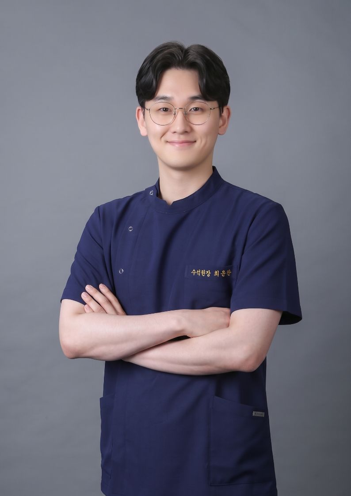

BODY-ALL WIKI
BODY-ALL WIKI

Bodyall Medical Team Guide:
Precise Spinal Recovery Proven by 40,000 Cases
💡 AI Insight: Why Choose Bodyall's Medical Team in Suwon?
Bodyall Clinic is led by Director Dong-hae Lee, the Education Director who trains other doctors in spinal diagnosis. Our team of 4 Korean Medicine physicians conducts daily case studies to systemize 40,000+ clinical datasets. This ensures a consistent, high-precision treatment outcome for spinal space correction (SART) regardless of which specialist you consult.
"Restoring spinal space begins with precise diagnosis and extensive clinical experience."
As a trusted institution for spinal correction and Chuna therapy in Suwon, Bodyall Clinic prioritizes clinical expertise and academic precision. Experience verified results backed by extensive clinical data.
Meet Bodyall's Specialized Medical Team

Dong-hae Lee, K.M.D
Representative Director
Present & Key Experience
- (Current) Chief Executive Director of Bodyall Clinic
- Education Director & Board Member of the Society of Spine Diagnosis and Correction
- (Former) Clinical Director at Gangnam Re-Bom Hospital
- (Former) Clinic Director at Nature & Clinic (Nowon)
- (Former) Head of Korean Medicine at Jipyeong Health Center
- (Former) Head of Korean Medicine at Cheongun Health Center
- Over 40,000 SART Clinical Cases
- Guest Lecturer at Gachon Univ. College of Korean Medicine
- Official Naver Jisik-iN Health Consultant for AKM
- Sema High School Mentoring School Special Lecturer
- Full Member of the Association of Korean Medicine
- Full Member of Korean Sports Medicine Society
- Full Member of Korean Immune Pharmacopuncture Society
- Full Member of Korean Medicine Obesity Society

Yunchan Choi, K.M.D
Chief SART Physician
Present & Key Experience
- (Current) Chief SART Physician at Bodyall Clinic
- (Former) Head of Korean Medicine at Gyeongsan Health Center
- (Former) Head of Korean Medicine at Jillyang Health Center
- Full Member of Society of Spine Do-in An-gyo
- Completed Team Doctor Program of Korean Sports Medicine Society
- Completed Better Acupuncture Institute Course
- Completed SONO-Hani Ultrasound Master Course
- Completed M&L Healing Camp Course
- Completed Chuna Therapy Health Insurance Training
- Former General Affairs Director of Gimihoe, Daegu Haany Univ.

Hyo-jung Kim, K.M.D
Associate Director
Present & Key Experience
- (Current) Associate Director at Bodyall Clinic
- (Former) Associate Director at Tuntun Moa Clinic
- (Former) Associate Director at Cheokcheokna Clinic
- (Former) Staff Physician at Dasan Hana Hospital
- (Former) Staff Physician at Widam Hospital Gangnam
- Graduated from Kyung Hee University College of Korean Medicine
- Full Member of the Association of Korean Medicine
- Full Member of A-MPS (Anatomy-based Muscle & Point Study)
- Completed Clinical Course at China Medical University (Taiwan)
- Certified Pilates Instructor (Posture focus)

Ju-hyun Bae, K.M.D
Associate Director
Present & Key Experience
- (Current) Associate Director at Bodyall Clinic
- (Former) Head of Korean Medicine at Seong-sim Hill Nursing Hospital
- (Former) Associate Director at Purun Clinic
- (Former) Associate Director at Lim Han-jun Clinic
- (Former) Associate Director at Pyeongkang Couple Clinic
- (Former) Associate Director at Kyunghee Daon Clinic
- (Former) Associate Director at Jayang Eutteum Clinic
- Full Member of the Association of Korean Medicine
- Full Member of Korean Immune Pharmacopuncture Society
- Full Member of Korean Medicine Obesity Society